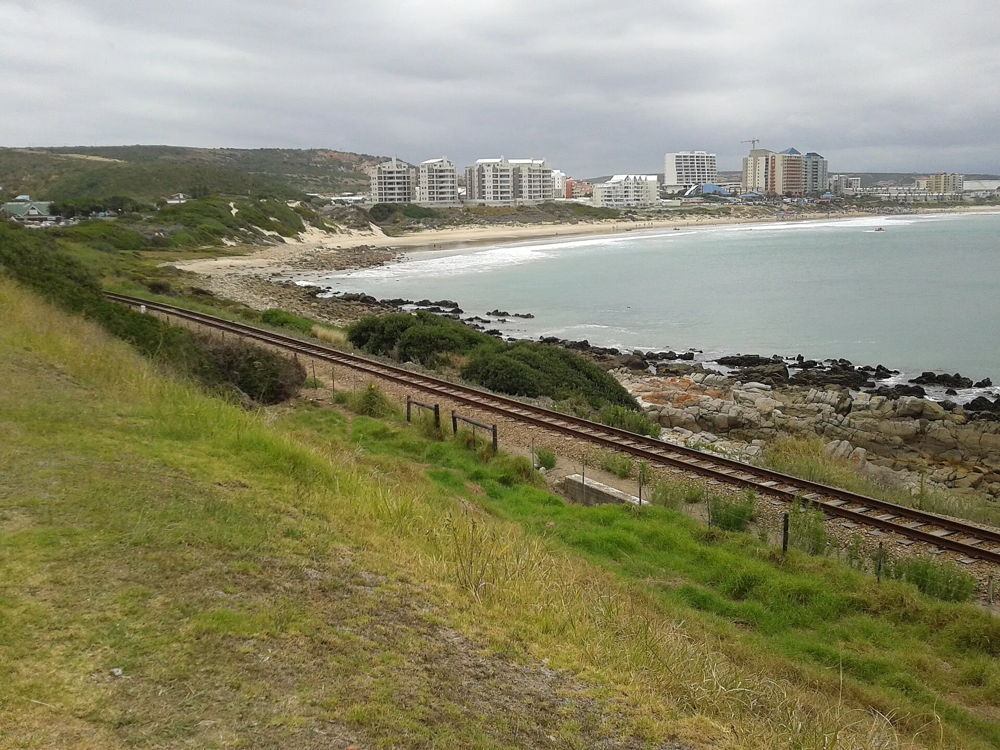
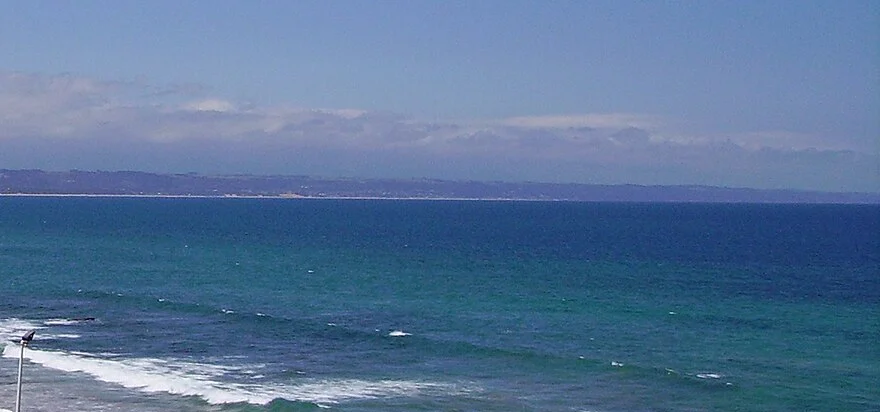

Vitamiene See lê in 'n stil straat in die hart van Hartenbos, Mosselbaai. Gaste gee ons ligging 9.9 uit 10.
Opskrif-foto: Diaz-strand, Mosselbaai. rcbutcher, publieke domein, via Wikimedia Commons.
Byna alles wat jy op vakansie nodig het, is op loopafstand.
Die rede waarom jy hier is. 'n Paar minute se stap van die voordeur af.
Net om die draai.
Restaurant op loopafstand vir die aande wat jy nie wil braai nie.
Gaste beskryf die promenade, die waterfront en 'n groot winkelsentrum as op loopafstand.
Die strand en waterpark is maklik bereikbaar, ideaal vir gesinne met kinders.
Hartenbos is deel van Mosselbaai, so die res van die Tuinroete begin by jou drumpel.
27 Magersfontein Laan, Hartenbos, Mosselbaai, 6520. Veilige parkering op die perseel.

Die see by Hartenbos.
Begin by die Hartenbos-strand en verken die res van die Mosselbaai-kuslyn.